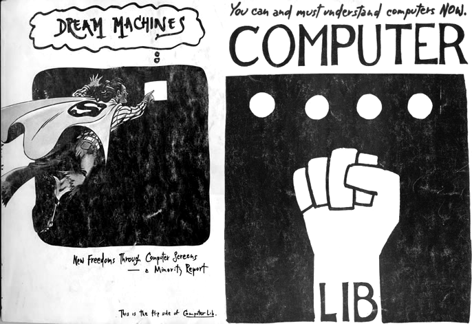
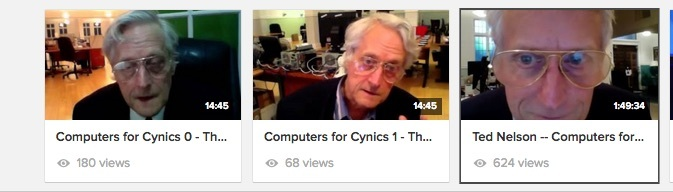
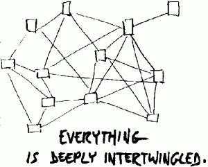
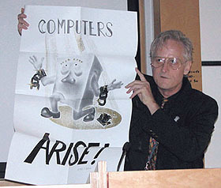

I would like to talk about the heroes of a DIY Future and I would like to start with Ted Nelson: the inventor of the back button. He is a hero for his words, his dreams, his humanism, and for the reminder that there was a time when the back button had to be invented.
Ted Nelson is a "systems humanist", writer, historian, and visionary whose been involved with the internet since before its inception. His thoughts and writing, especially two gigantic mystic fanzines called ComputerLib and Dream Machines, inspired a generation of hippie hacker computer nerds. His influence can be can be seen in the creation of the personal computer, the standards of the internet, and even in the business model of imzy. His largest influence, though, is in the enthusiasm and excitement we feel about our devices and the potential of the internet.
I have not read ComputerLib or Dream Machines personally, because they are published through a vanity press and woefully expensive, but you can find pages of them online. I recommend reading this excerpt, as his writing is just deliiiiiiightful.
He also has many videos on youtube, including a series called "Computers for Cynics". They are long, but lively, and I mostly love their aesthetic: a white-haired man with cartoon mouse glasses stationed at the archive.org headquarters, recording into his laptop from some sideroom like he's a child making secret youtube vlogs.
The underlying philosophy of Nelson,laid out in ComputerLib and DreamMachines, but can be summarized loosely as:
While these ideas seem simple, I think their revolutionary importance can be understood in the context of the computer's history. So I want to make a slight tangent and talk about computer code and metaphor!
Computers are such a basic presence in my life that I do not think of their etymologies. I forget that people had to not just invent computers, but also explain to someone else what exactly these machines do. I am typing this text document in a writing program that is saving my words as a file on my desktop. I have a folder that keeps all similar files and when I no longer need them, I move the folder to my trash can. There is no innate reason that I should interact with a computer this way. Instead, these concepts were created because of the computer's original customers. The machines were ridiculously expensive, so the ideal customer would have to be those with money, like businesses or schools. The value of computers would be best explained in terms a businessperson could understand and thus the inner-workings of a super-powered future machine was simplified to the concepts of a desk. And the ways in which you could use a future machine was simplified to the idea of preparing important files faster, and being able to move important files from your desk to a coworker's desk without having to actually stand up and walk over to them.
This is a simplification of this simplification, but its point is still valid, which is this: we did not naturally discover files and desktops hidden in machinery, instead we used the metaphors of an office to guide what computers could do and how we could understand them. But these business metaphors became a standard to build from, and this is why our current computerized world is one of files, folders, structures, lists, and protocols.
How different would our world be if computers had a different original customer base? What if they were originally made for the forestry service? So instead of desktops and files, we had forests and trees and instead of making sure our programs followed a standard protocol, we made sure our saplings had healthy root structures.
At its base level, when we talk about using computers we are talking about sending different voltage levels through circuitry...we can describe this process using any words we'd like.
Which brings me back to Ted Nelson. Ted approached computing from an eclectic, artistic angle and with profoundly original words. He was the child of entertainers, studied filmmaking in college, and approaches life with a patchwork of scattered passions . Much of his work is centered on parallelism, that an idea makes the most sense when seen in the context of all other views--as if it were a frame in a film reel, whose meaning arises only when you view all frames in succession. His major passion was for an expanding, cosmic, computer library called Xanadu. Xanadu was a way for people to share knowledge and art that could be transposed, connected to, or reworked by others. Folks could cite and connect to parts of each others work--but, importantly, the original source was never lost. In Xanadu, you could read an essay that quoted another work, but then click on the quote to read its source in full alongside the quoting piece. You weren't copying text from one place and pasting it somewhere else, you were connecting the whole of that text through one specific segment to something else.
While many of these ideas could be seen as precursors to the internet, there's a nuance to it that's hard to describe. It's hard because Xanadu was not designed with the common metaphors of files, structures, and hierarchies. it'd be easier to describe through the metaphor of songs or city planning. Nelson himself had such a hard time explaining these concepts that he had to invent new words for them, like intertwingled. Intertwingled is his description of how knowledge connects to and relates to other knowledge. In Computerlib he wrote "EVERYTHING IS DEEPLY INTERTWINGLED. In an important sense there are no "subjects" at all; there is only all knowledge, since the cross-connections among the myriad topics of this world simply cannot be divided up neatly."
Some of the words he invented, like transclusion or teledildonics or zizag files, still sound like beautiful nonsense. Other words he invented have become far better known: like hypertext and micropayments.
While Ted helped establish the world wide web (his word hypertext is included in each webpage address, as it's part of HTTP) he does not see the web as a realization of Xanadu. Instead, it is a shallow simplification of Xanadu ideals, the ideals he first wrote of in 1965 and which he continues to work on today.
The computers we use now are far different from the original business machines, and as is the world in which we use them. There are more online files and folders than physical ones, and the Save Icon of a disk has outlasted the actual disk it was based on. Computing terms no longer need their physical counterparts to have meaning, which means that programmers were able to literally turn their metaphors into reality. The words we use are important and can manifest incredible things. Ted Nelson is a hero to a DIY Future because of his beautiful language, and for the thrill still living in his metaphors.
